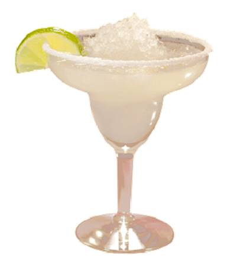

INGREDIENTES
- 50 ml de tequila
- 25 ml de triple sec
- 25 ml de suco de limão fresco
- Gelo
- Sal para a borda do copo
- Fatia de limão (para guarnição)
INSTRUÇÕES
- Se desejar, passe a borda de um copo em limão e depois no sal para decorar.
- Em uma coqueteleira, adicione tequila, triple sec, suco de limão e gelo.
- Agite bem até ficar bem gelado.
- Coe para o copo preparado e decore com uma fatia de limão.